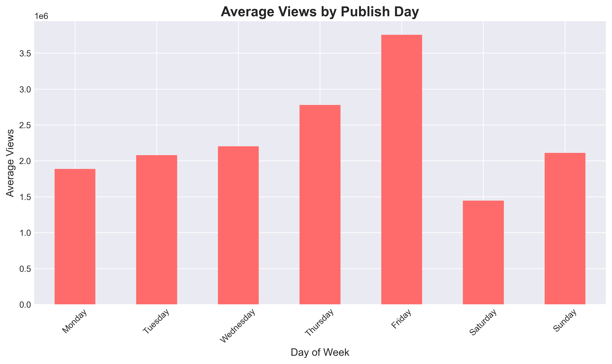

This analysis explores YouTube trending videos data to understand the factors that contribute to video popularity on the platform. Using a comprehensive dataset of 161,470 trending videos collected between 2006 and 2018, we analyze patterns in content categories, engagement metrics, publishing behavior, and more.
The goal of this analysis is to provide insights for content creators, marketers, and anyone interested in understanding what makes videos trend on YouTube. Through visualizations and statistical analysis, we uncover patterns that can help inform content strategy and optimization.
Dataset Information
The dataset includes key information about each trending video:
Video metadata: Title, description, tags, category
Publishing day shows measurable impact on average view counts. Most trending videos were published before the weekend, particularly on Thursday and Friday.

Key Insight: Planning to publish content before the weekend can improve visibility and trending potential.
While you typically make videos on topics you enjoy, mixing elements can help. Comedy is a category that can be integrated into otherwise unrelated videos. Whether educational or informational, combining content with well-performing categories can boost performance.
Titles
Keep titles clean, short, and informative. Avoid excessive use of All Caps.
Tags
Use about 20 highly relevant tags instead of using all the tags imaginable.
Engagement and Momentum
Strong engagement immediately after publishing increases the chances of videos trending.
Quality Over Quantity
High performing videos consistently show strong engagement ratios.
Thumbnails
While this analysis focused on titles and metadata, thumbnails also play a very important role in video performance.
Views, likes, and comments show a strong positive correlation
Content category influences trending potential
Time to trend highlights the importance of early performance
Engagement ratios are more informative than raw view counts alone
Summary: Music dominates reach, Comedy leads engagement, and Movies & trailers trend fastest. Metadata has minimal impact on performance, while views are highly skewed toward top performers.